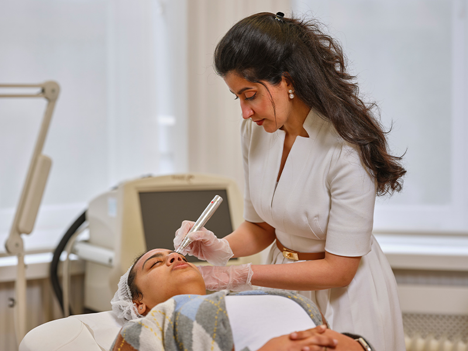

Consultant Dermatologist | GMC Number: 7490535
BMBS, BMedSc (Hons), PgCert Clinical Ed, MRCP (Derm)
Dr Alla Altayeb is a highly skilled Consultant Dermatologist with expertise in both medical and surgical dermatology. She earned her Bachelor of Medicine and Surgery (BMBS) from the University of Southampton, where she also obtained an Honours degree in Biomedical Sciences (BMedSc Hons) for her research in Teledermatology.

She completed her Core Medical Training in South Wales, gaining full membership with the Royal College of Physicians (MRCP) and earning a Postgraduate Certificate in Clinical Education (PgCert Clinical Ed).
Dr Altayeb then pursued her specialist Dermatology training across Edinburgh, Surrey, and Sussex, contributing to dermatology research and publishing in high-impact journals.

Dr Altayeb specialises in diagnosing and treating a wide range of skin, hair, and nail conditions, including skin cancer, and mole assessments, and inflammatory skin diseases like psoriasis, eczema, and acne. She also offers aesthetic dermatology treatments, such as anti-wrinkle injections and skin boosters.
Her surgical expertise includes skin cancer excisions, mole and skin tag removals, skin biopsies, and cryotherapy. She is dedicated to delivering patient-centered care with the latest advancements in dermatology.
Dr Alla Altayeb holds a Bachelor of Medicine and Surgery (BMBS) from the University of Southampton and an Honours degree in Biomedical Sciences (BMedSc Hons), with a focus on Teledermatology research. She is a Member of the Royal College of Physicians (MRCP) and has completed advanced dermatology training across Edinburgh, Surrey, and Sussex. Additionally, she holds a Postgraduate Certificate in Clinical Education (PgCert Clinical Ed), reflecting her dedication to medical education and training.
Dr Altayeb is experienced in managing a wide range of skin, hair, and nail conditions. She specialises in psoriasis, eczema, acne, rosacea, skin allergies, pigmentation disorders, and hair loss. She also provides comprehensive skin cancer screenings and mole assessments, ensuring early detection and treatment when necessary.
Yes, Dr Altayeb provides aesthetic and cosmetic dermatology services to enhance skin health and appearance. Her treatments include anti-wrinkle injections, skin boosters, and personalised skincare plans to improve skin texture, hydration, and overall radiance.
Dr Altayeb has extensive surgical expertise in dermatology. She performs skin cancer excisions, mole and skin tag removals, skin biopsies, and cryotherapy. Her approach ensures safe, precise procedures with optimal cosmetic outcomes.
Yes, she specialises in mole checks, skin lesion assessments, and mole removal procedures. Using advanced diagnostic techniques, she evaluates moles for abnormalities and offers surgical removal when needed.
Dr Altayeb offers full-body skin cancer screenings and mole mapping services, ensuring early detection of melanoma and other skin cancers. She also provides expert advice on sun protection and skin cancer prevention.
She tailors acne treatments to each patient, offering a range of solutions, including prescription medications, medical-grade skincare, chemical peels, laser therapy, and microneedling. She also addresses acne scarring through targeted dermatological procedures.
Appointments with Dr Altayeb can be scheduled at The London Dermatology Centre by phone or email. Online booking options may also be available for your convenience.